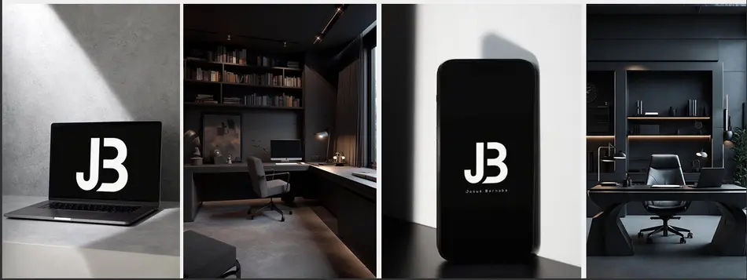

- Títulos
- Montserrat Bold
- Cuerpo
- Gabriel Sans Condensed
- Primario
#FF3131 - Secundario
#FFC2AE - Complementario
#FFFFFF
Branding · Marca personal JB
- Contexto
- Un cliente que quería lanzar su marca personal.
- Función
- Crear desde cero la marca personal de un empresario.
- Proceso y aprendizaje
- Desarrollé la identidad visual desde cero: concepto, logotipo, colores y tipografías. El resultado fue una marca personal sobria y reconocible, y el proyecto fortaleció mis habilidades en branding.